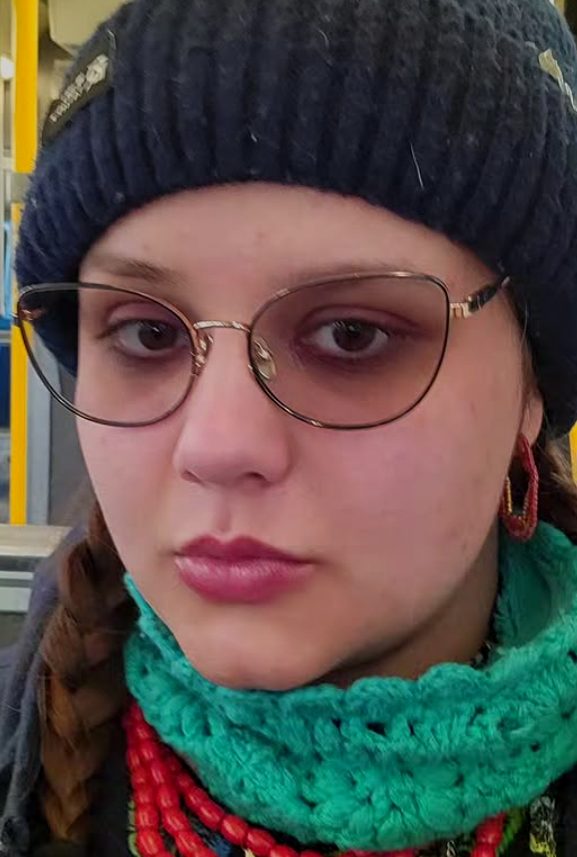

Hello and welcome to my little world. In this channel, we will explore new ideas and paint along the way.
A little about me is, I'm a Polish girl living in America. I love art, and I have a passion for exploring new places.
I would also like to mention that I'm Catholic and still growing in my faith. So come along and let's go on a journey
and explore new things. Some of the media I have worked with have a range from 2D to 3D media like illustrations, paintings,
mixed media, film, editing, and a bit of coding.
Illustrations
I have been a freelance illustrator for 16 years, and I have always had a way with drawing.
And putting my ideas on paper. Probably, I work with ink and with color pencils, my works
have a focus on the use of color and texture within the piece. My work has a dream-like feel
with a sense of horror as the playful color rather than the work plays into the inquiry of the
themes within it.
Painting
Within all of my paintings, I follow one rule, "
With the use of color within the piece, the color
is the tone of painting and the mood of the artist".
All my paintings play with the idea of tone and
color, along with a blend of mediums like color
pencil or coral for more texture. I primarily use
Arctic paint and build layers of paint to build
texture to my works.
Film
I work with sound and texture within my films.
Along with themes from my daily life, my films range
in length and in their use of color. All my films focus
on the use of sound and imagery, and on how both affect
the viewer's reaction and what the sound can evoke.
BIO

Hello, my name is Kasia. I'm a freelance artist with a background in art and art history.
I have worked in painting, film, editing, and digital media.